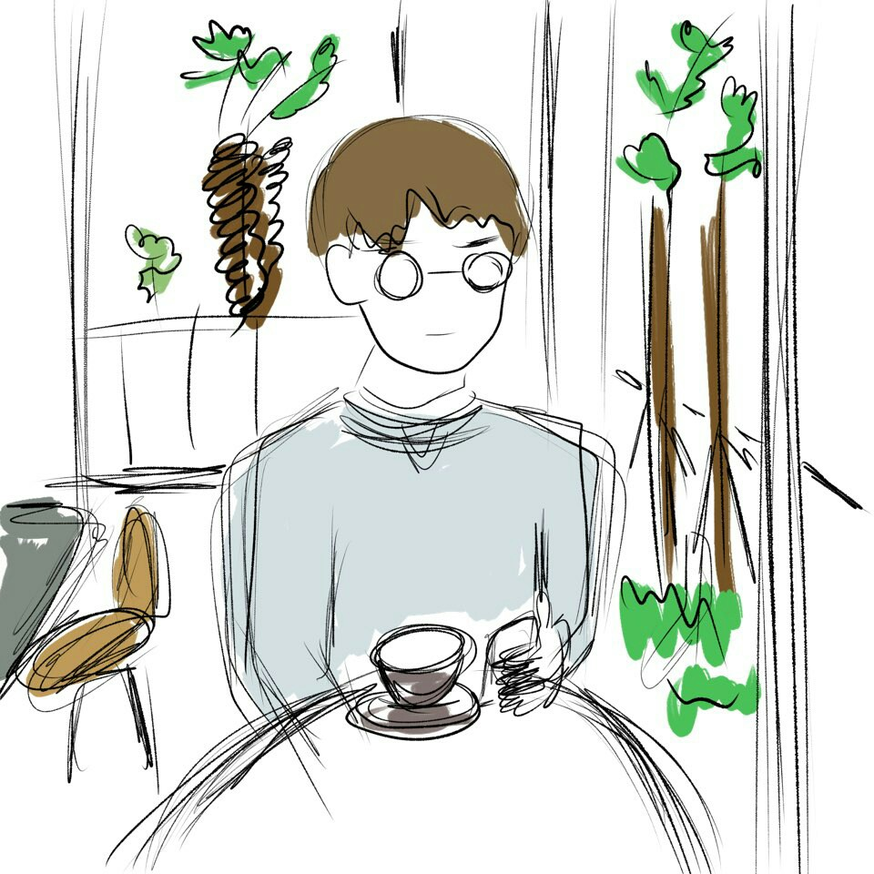

자기소개
안녕하세요. 제주대학교 컴퓨터공학전공 12학번 김정훈입니다.
유니티 개발과 VR개발을 좋아합니다. github.com/PPorotos
저는 93년생 꿈많은 청년입니다.
언제나 저를 개발하고 미래를 위해 도전하는 것을 멈추지 않을 것입니다.
수상 경력
2016. 11. 25.
2016 제주대학교 공학교육혁신센터 캡스톤디자인 공모전 장려상(스마트 카트)
2017. 11. 11.
2017 제주대학교 컴퓨터공학과 작품전시회 개발자상(ShootingGame)
2017. 11. 24.
2017 제주대학교 공학교육혁신센터 캡스톤 디자인 우수상(IoT 소화기)
2018. 11. 10.
2018 제주대학교 컴퓨터공학전공 작품전시회 우수상(VR 스크래치)
2018. 11. 30.
2018 제주대학교 공학교육혁신센터 캡스톤 디자인 장려상(VR 스크래치)
활동내역
2016. 1. 29. ~ 2. 4.
IS-DEC(International Student Joint Capstone Design Project) 이수
2017. 6. 22. ~ 26.
제주대학교 공학교육혁신센터 Unity3D를 이용한 VR교육 수료
2017. 9. ~ 2017. 11.
VR/AR기반 콘텐츠 만들기 2기 수료
2017. 10. ~ 2017. 12.
게임 엔진을 이용한 애니메이션 제작 프로젝트 수료
2018. 5. 11. ~ 13.
제주대학교 공학교육혁신센터 Unity 기초교육 수료
2018. 5. 25. ~ 27.
제주대학교 공학교육혁신센터 UX/UI 교육 수료
2018. 11. 16. ~ 18.
제주대학교 공학교육혁신센터 블록체인 해커톤 '내가 디자인하는 블록체인 서비스' 교육 과정 이수
2013. 6. ~ 2015. 3.
육군 5사단 병장 만기전역(운전병)
2015. 3. ~ 2019. 2.
제주대학교 컴퓨터공학과 차세대통신망 연구실
2016. 7. ~ 2016. 8.
현장실습 A-Live(파닥파닥) 마케팅 업무(페이스북 마케팅)
2015. 3 ~ 2015. 12.
제주대학교 컴퓨터공학전공 학술부 차장 역임
2016. 1. ~ 2016. 12.
제주대학교 컴퓨터공학전공 부학생회장 역임
2017. 2. ~ 2017. 8.
제주대학교 링크사업단 캡스톤디자인 공모전 참가(특허출원 신청)
봉사 활동
2016. 2. ~ 현재
밀알복지재단 소정금액 기부
->밀알 복지재단으로 매달 소정의 금액을 기부를 하고있습니다.
2013. 6. ~ 2013. 10.
지역 농촌 봉사활동
->지역 환경미화와 농촌의 부족한 일손을 도와주는 봉사활동을 하였습니다.
관심분야
- C#
- Unity3D
- Aduino
- VR/AR